Esse mini não chegou à mesa.
Erro 404, página não encontrada: o endereço que você abriu não existe ou foi digitado errado. A mesa do seu grupo continua a um toque.

Erro 404, página não encontrada: o endereço que você abriu não existe ou foi digitado errado. A mesa do seu grupo continua a um toque.